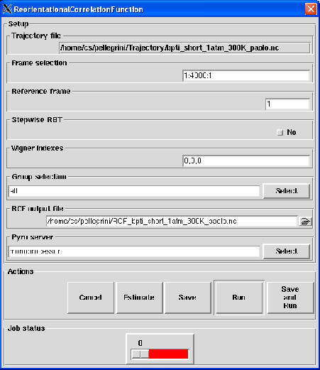

Next: Output
Up: Reorientational Correlation Function
Previous: Theory and implementation
Contents
Parameters
Pressing the Reorientational Correlation Function button will pop up the dialog shown on figure 4.47
Figure 4.47:
The dialog from where the RCF analysis will be set up and run.
|

|
The following input fields controls the parameters for the Reorientational Correlation Function (RCF) analysis:
- Trajectory file
Format: string
Default: traj_file where traj_file is the name of the loaded trajectory
Description: the value of this widget can not be changed. It just recalls for information purpose the name
of the trajectory file loaded for the analysis.
- Frame selection
Format: string
Default: 1:traj_length:1 where traj_length is the number of frames of the trajectory.
Description: this widget allows to select the trajectory frames that will be used for the analysis. This must
be a string of the form:
first:last:step
where first is an integer specifying the first frame number to consider, last is an integer specifying the last
frame number to consider and step is an integer specifying the step number between two frames.
For example,
- 2:10:3 will select the frames 2, 5 and 8.
- 1:5:1 will select the frames 1, 2, 3, 4 and 5.
- Reference frame
Format: integer in [1,traj_length] where traj_length is the number of frames of the input trajectory
Default: 1
Description: this widget allows to specify which frame should be the reference for the RCF analysis.
The value entered should be an integer ranging from 1 to traj_length where traj_length is the
number of rames of the input trajectory.
- Stepwise RBT
Format: string equal to yes or no
Default: no
Description: if set to yes, each frame f will serve as the reference for the frame f+1
when defining the RBT canceling the value entred in Reference frame entry.
- Wigner indexes
Format: string
Default: 0,0,0
Description: this widget allows to specify which Wigner triplet (j,m,n) to select for the RCF analysis.
The entered value must have the following specific format:
j:m:n
where j, m,n are positive integers that represent respectively the j, m,n Wigner indexes.
- Group selection
Format: group selection string
Default: all
Description: this widget allows the selection of the groups of atoms that will be defined as rigid-bodies when
performing the RCF. See Section 4.2.2.3 for more details.
- RCF output file
Format: string
Default: RCF_traj_file.nc where traj_file.nc is the name of the input trajectory
Description: this widget allows to enter the name of the NetCDF output file of the RCF analysis. A CDL
version of the NetCDF output file is also automatically created with RCF_traj_file.cdl name.
Next: Output
Up: Reorientational Correlation Function
Previous: Theory and implementation
Contents
pellegrini eric
2009-10-06